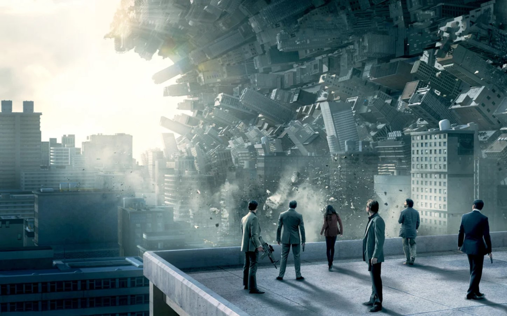

Если вы считаете, что когда понимаете, что спите ограничены только своей способностью воображать и постигать, а не законами физики или общества, тогда ответ на то, для чем полезно осознанное сновидение, либо чрезвычайно прост (что угодно!), либо чрезвычайно сложен (все!). Проще дать пример того, что некоторые люди делали с осознанными сновидениями, чем дать окончательный ответ о его потенциале.
— Приключения и фантазии
Часто первое, что привлекает людей к осознанным сновидениям, — это возможность необузданных приключений и исполнения фантазий. Полет — это любимое наслаждение осознанных сновидений, как и секс. Многие люди говорят, что их первое осознанное сновидение было самым чудесным переживанием в их жизни. Большая часть необычайного удовольствия от осознанных сновидений исходит от волнующего чувства полной свободы, которое сопровождает осознание того, что вы находитесь во сне и не будет никаких социальных или физических проблем.
— Избавление от кошмаров
К сожалению для многих людей, вместо того чтобы дать выход безграничной фантазии и восторгу, сны могут быть страшными эпизодами безграничного ужаса. Если вы знаете, что спите, это простой логический шаг к осознанию того, что ничто в вашем текущем опыте, каким бы неприятным оно ни был, не может причинить вам физического вреда. Там нет необходимости бежать или бороться с монстрами мечты. На самом деле, часто бессмысленно пытаться, потому что ужас, преследующий вас, был задуман в вашем собственном уме и до тех пор, пока вы продолжаете бояться его, он может преследовать вас везде, где вы мечтаете быть.
В кошмарном сне этот акт мужества может принять любую форму, которая предполагает столкновение с «угрозой», а не ее избегание. Монстры часто превращаются в добрых существ, друзей или пустые оболочки, когда люди мужественно противостоят им в осознанных сновидениях. Это чрезвычайно вдохновляющий опыт. Она учит вас в очень интуитивной манере, что вы можете победить страх и тем самым стать сильнее.
— Репетиция
Осознанные сновидения — это необычайно яркая форма ментальных образов, настолько реалистичная, что весь фокус в том, чтобы осознать, что это ментальная конструкция. Поэтому неудивительно, что многие люди используют осознанные сновидения для репетиции успеха в бодрствующей жизни. Примеры таких применений включают публичные выступления, сложные конфронтации, артистические выступления и спортивное мастерство. Поскольку активность мозга во время действия во сне такая же, как и во время реального события, нейронные паттерны активация, необходимая для выполнения навыка (например, прыжка с трамплина или пируэта), может быть установлена в состоянии сна при подготовке к выполнению в бодрствующем мире.
— Креативность и решение проблем
О творческом потенциале сновидений ходят легенды. Мозг очень активен в фазе быстрого сна и не стеснен сенсорной информацией, что в совокупности может способствовать появлению новых комбинаций событий и объектов, которые мы воспринимаем как странность сновидения. Эта же самая новизна позволяет мышлению принимать формы, которые редко встречаются в бодрствующей жизни, проявляясь как повышенная креативность или дефектное мышление в зависимости от точки зрения человека.
— Исцеление
Влияние визуальных образов на организм хорошо известно. Точно так же, как практика навыков во сне может повысить эффективность бодрствования, исцеляющие образы сновидений могут улучшить физическое здоровье. Пациенты-медики часто используют успокаивающие и позитивные образы, чтобы облегчить боль, и мир сновидений предлагает наиболее яркую форму образов. Таким образом, некоторые люди используют осознанные сновидения для преодоления фобий, работы с горем, уменьшения социальных и сексуальных тревог, достижения большей уверенности в себе и направления образа тела во сне для облегчения физического исцеления.
Другие возможные исцеления через осознанные сновидения: практика физической навыки кровообращения головного и спинного мозга больных с повреждениями способствующая восстановлению нервно-мышечной функции, более быстрое восстановление от травм или заболеваний с помощью осознанных образов сна, и повышенным чувством свободы для любого, кто чувствует себя ограниченным инвалидностью или обстоятельствами.
— Трансцендентность
Опыт пребывания в осознанном сновидении ясно демонстрирует тот поразительный факт, что мир, который мы видим, — это конструкция нашего разума. Эта концепция столь неуловимая, когда ее ищут в бодрствующей жизни, является краеугольным камнем духовных учений. Это заставляет нас выйти за рамки повседневного опыта и спросить: «если это не реально, то что?». Осознанные сновидения столь откровенно обнажают истину, на поиски которой многие тратят целые жизни, часто вызывают духовные вопросы у людей, пытающихся использовать их в гораздо более приземленных целях. Осознанные сновидения не только заставляют задуматься о природе реальности, но и заставляют задуматься о ней.